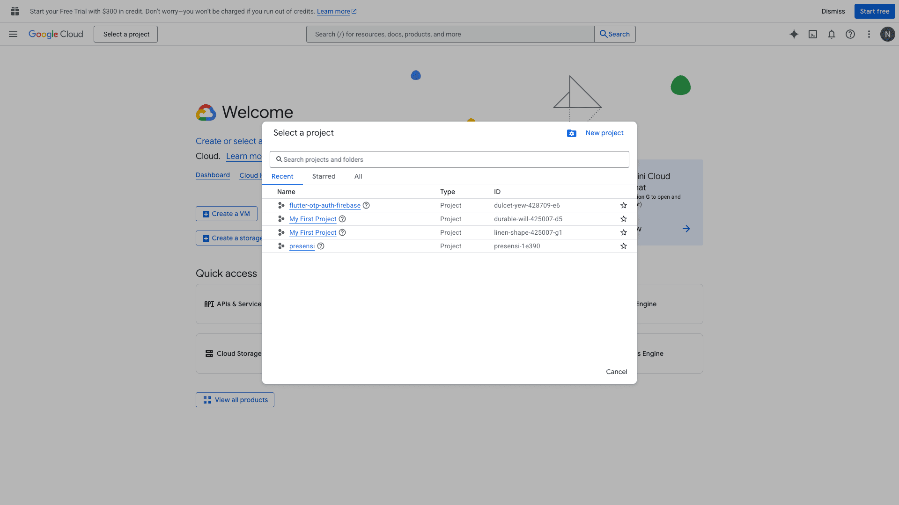
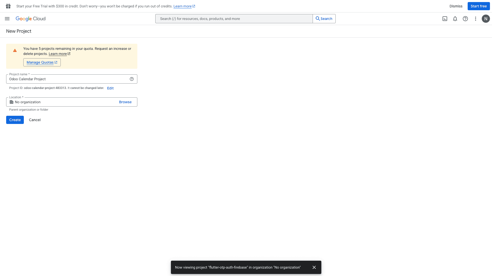
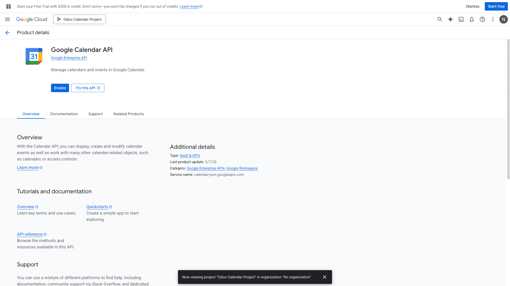

Langkah pertama adalah membuat "wadah" di Google Cloud untuk menampung izin akses Odoo.
A. Buat Project Baru
- Buka Google Cloud Console.
- Klik dropdown nama project di bagian atas (sebelah logo Google Cloud).
- Pada jendela yang muncul, klik tombol New Project di pojok kanan atas.

📸 Screenshot: Jendela "Select a Project" & Tombol New ProjectB. Beri Nama Project
-
Isi kolom Project Name dengan nama:
Odoo Calendar Project. - Biarkan "Location" apa adanya (biasanya 'No Organization').
- Klik tombol Create dan tunggu beberapa detik hingga notifikasi selesai.

📸 Screenshot: Input nama project & tombol CreateC. Aktifkan Google Calendar API
- Pastikan project yang baru dibuat sudah terpilih di bagian atas.
- Klik menu navigasi (garis tiga) > APIs & Services > Library.
- Ketik
Google Calendar APIdi kolom pencarian. - Klik hasilnya, lalu tekan tombol biru bertuliskan Enable.

📸 Screenshot: Halaman detail API & Tombol Enable